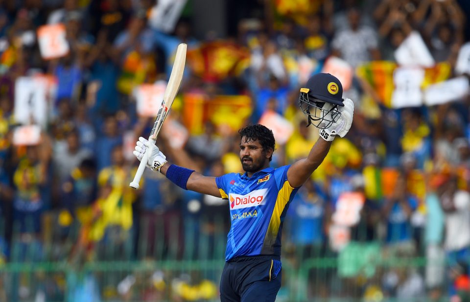

LOCAL
ඉදිරි වසර 10 ක කාලය ඇතුළත අන්තර්ජාතික ක්රිකට් සභාව විසින් පවත්වනු ලබන ලෝක කුසලාන තරගාවලි අතර 2026 වසරේ පැවැත්වීමට නියමිත පන්දුවාර විස්සයි-20 ලෝක කුසලාන ක්රිකට් තරගාවලියේ සම සත්කාරකත්වය දැරීමේ අවස්ථාව ශ්රී ලංකාවට හිමිව තිබේ. ඉන්දියාවද සම සත්කාරකත්වය දැරීමට නියමිත මෙම ලෝක කුසලාන ක්රිකට් තරගාවලියේදී ශ්රී ලංකාව තුළද තරග කිහිපයක් පැවැත්වෙනු ඇත.
read moreLanka Premier League (LPL) 2nd edition will be held from 30th July to 22nd August
Sri Lanka Cricket wishes to inform you that the 2nd Edition of the Lanka Premier League (LPL) will be held from 30th July to 22nd August 2021. ‘’We have found a suitable window to hold this year’s edition, whilst we are currently working on finalizing the other details of the tournament,’’ said Professor Arjuna De Silva, Chairman, Management Committee of Sri Lanka Cricket. The first edition of the LPL, which is Sri Lanka’s topmost domestic T20 league, with an international flavor, was initiated last year and was held at the MRICS, Hambantota, with the participation of 05 teams. The first edition was held under a successful Bio-Bubble environment, whilst Sri Lanka Cricket will assess the country’s situation and discuss with the Ministry of Health closer to the tournament to ascertain the health situation in the country prior to taking a final decision on the competition.
INTERNATIONAL

Dhoni, Kohli, Rohit, Bumrah retained by IPL franchises for 2022
Narine, Russell, Williamson and Maxwell are also among the big names who won't be going into the auction
read more
ICC Women's CWC Qualifier in Zimbabwe abandoned amid Covid-related uncertainty
The tournament, scheduled to be played till 5 December, would have decided the final three spots for the ICC Women's World Cup in New Zealand next year as well as the remaining two berths in the next cycle of the ICC Women's Championship.
read more
UAE set to host ICC Women's T20 World Cup Asia Qualifier
The United Arab Emirates will be looking to make the most of home conditions while drawing inspiration from teams at the recent ICC Men’s T20 World Cup 2021 as they commence their campaign in the ICC Women’s T20 World Cup Asia Qualifier against Malaysia on Monday.
read more
Dhoni, Kohli, Rohit, Bumrah retained by IPL franchises for 2022
Narine, Russell, Williamson and Maxwell are also among the big names who won't be going into the auction
read moreICC Women's CWC Qualifier in Zimbabwe abandoned amid Covid-related uncertainty
The tournament, scheduled to be played till 5 December, would have decided the final three spots for the ICC Women's World Cup in New Zealand next year as well as the remaining two berths in the next cycle of the ICC Women's Championship.
read moreUAE set to host ICC Women's T20 World Cup Asia Qualifier
The United Arab Emirates will be looking to make the most of home conditions while drawing inspiration from teams at the recent ICC Men’s T20 World Cup 2021 as they commence their campaign in the ICC Women’s T20 World Cup Asia Qualifier against Malaysia on Monday.
read moreRECENT
Crowds to be allowed at 50% capacity | Sri Lanka vs West Indies Test Series
Sri Lanka Cricket wishes to announce that 50 percent of the spectators out of the maximum capacity of the Galle International Cricket Stadium will be allowed to enter the ground to witness the ongoing test series played between Sri Lanka and West Indies.
read more
Sri Lanka Under 19 squad for Youth One Day series against England
Sri Lanka Cricket’s Selection Committee selected the following Sri Lanka U19 squad to take part in the 05 match ODI Series against England U19.
The 1st ODI will be played on the 30th November, 2021 at the SSC Ground, Colombo.
- Shevon Daniel
- Anjala Bandara
- Pawan Pathiraja
- Sadisha Rajapaksa
- Sadeesh Jayawardena
- Wanuja Sahan Kumara
- Raveen De Silva (Vice Captain)
- Ranuda Somarathne
- Malsha Tharupathi
- Abhishek Liyanaarachchi
- Traveen Mathew
- Sasanka Nirmal
- Danal Hemananda
- Yasiru Rodrigo
- Matheesha Pathirana
- Chamidu Wickramasinghe
- Lahiru Abeysinghe
- Vinuja Ranpul
- Sakuna Liyanage

Fiery Baptism for Kusal Janith in Quest of New Aura
Sri Lanka’s newly inducted ODI captain Kusal Janith Perera will face the biggest challenge in his career as to whether he can rise above the odds leading a new look fresher oriented side against an experienced Bangladesh outfit of star performers known to revel in their own backyard in tomorrow’s first of three ODIs at Dhaka.
read more
Crowds to be allowed at 50% capacity | Sri Lanka vs West Indies Test Series
Sri Lanka Cricket wishes to announce that 50 percent of the spectators out of the maximum capacity of the Galle International Cricket Stadium will be allowed to enter the ground to witness the ongoing test series played between Sri Lanka and West Indies.
read moreSri Lanka Under 19 squad for Youth One Day series against England
Sri Lanka Cricket’s Selection Committee selected the following Sri Lanka U19 squad to take part in the 05 match ODI Series against England U19. The 1st ODI will be played on the 30th November, 2021 at the SSC Ground, Colombo.
- Shevon Daniel
- Anjala Bandara
- Pawan Pathiraja
- Sadisha Rajapaksa
- Sadeesh Jayawardena
- Wanuja Sahan Kumara
- Raveen De Silva (Vice Captain)
- Ranuda Somarathne
- Malsha Tharupathi
- Abhishek Liyanaarachchi
- Traveen Mathew
- Sasanka Nirmal
- Danal Hemananda
- Yasiru Rodrigo
- Matheesha Pathirana
- Chamidu Wickramasinghe
- Lahiru Abeysinghe
- Vinuja Ranpul
- Sakuna Liyanage
Fiery Baptism for Kusal Janith in Quest of New Aura
Sri Lanka’s newly inducted ODI captain Kusal Janith Perera will face the biggest challenge in his career as to whether he can rise above the odds leading a new look fresher oriented side against an experienced Bangladesh outfit of star performers known to revel in their own backyard in tomorrow’s first of three ODIs at Dhaka.
read more